Blog 1: ASOS vs. Boohoo vs. PrettyLittleThing A Data-Driven Competitive Analysis
By Ramune Matulyte
Published: March 2026
The UK fast fashion market is fiercely competitive, with ASOS, Boohoo, and PrettyLittleThing (PLT) battling for the attention of young shoppers. But who is winning the digital race? Using Similarweb data from August 2025 to January 2026, I've analysed all three brands to uncover strengths, weaknesses, and strategic opportunities.
Traffic Overview: ASOS Dominates, but Rivals Are Nimble
ASOS remains the traffic giant with 124.2 million total visits over six months far ahead of Boohoo (22.03M) and PLT. However, ASOS's month-on-month traffic declined by 17.67%, while competitors held steadier.
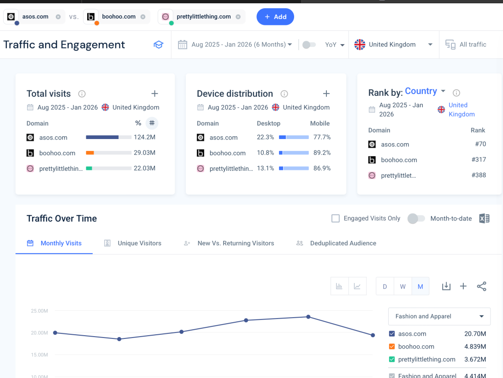
Figure 1: Total Visits Comparison - ASOS 124.2M, Boohoo 22.03M
Device distribution tells a clear story. All three are mobile-first:
|
Domain |
Desktop |
Mobile Web |
|
ASOS |
22.34% |
77.66% |
|
Boohoo |
22.3% |
77.7% |
|
PLT |
13.1% |
86.9% |
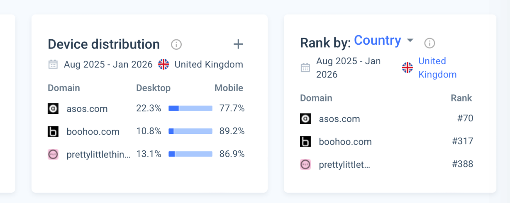
Figure 2: Device Distribution Comparison
Research by Kovács & Keresztes (2024) confirms that for Gen Z fashion shoppers, mobile experience is everything. Boohoo’s 89% mobile traffic suggests they understand this best.
Engagement: Quality vs. Quantity
While ASOS leads in volume, engagement metrics reveal a different picture. Looking at the six-month averages:
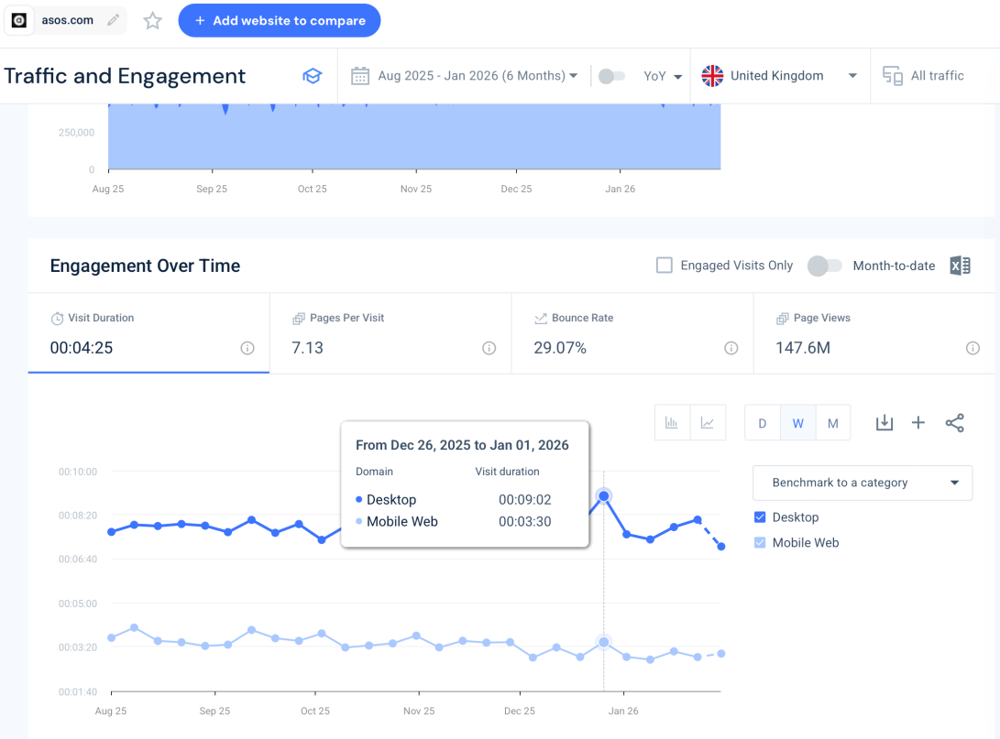
Figure 3: Engagement Metrics - ASOS Visit Duration 00:04:25, Pages 7.13, Bounce Rate 29.07%
However, on specific dates, competitors outperform dramatically. On September 8, 2025:
|
Domain |
Visit Duration |
|
ASOS |
4 minutes 14 seconds |
|
Boohoo |
7 minutes 52 seconds |
|
PLT |
12 minutes 27 seconds |
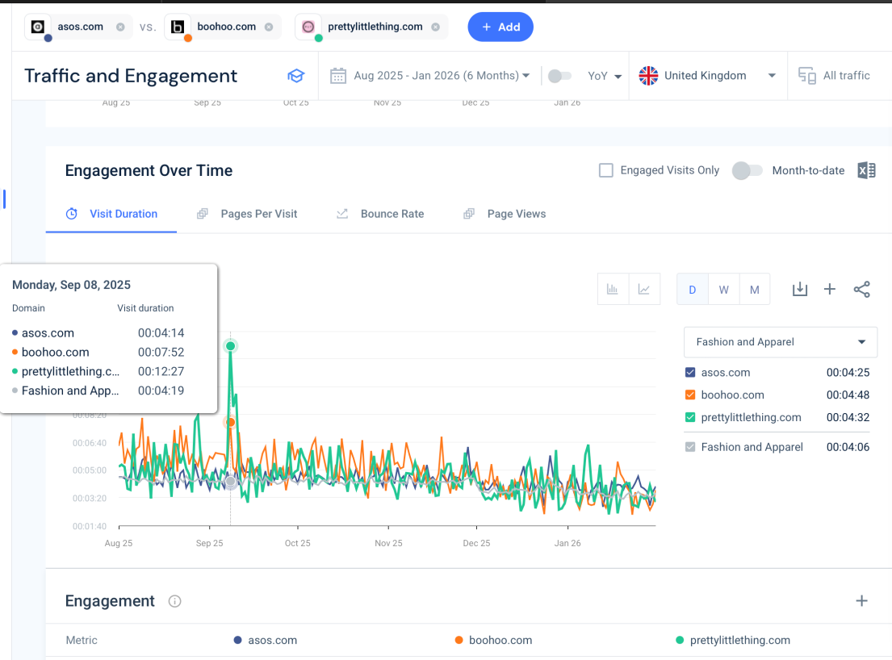
Figure 4: Visit Duration Spike - PLT 12:27
This suggests PLT has superior content, better product discovery, or more engaging features that keep shoppers browsing. As Ologunebi & Taiwo (2023) note in their study of ASOS and e-commerce brands, user experience directly impacts brand visibility and conversion potential.
Marketing Channels: Different Acquisition Strategies
The channel mix reveals distinct strategic approaches:
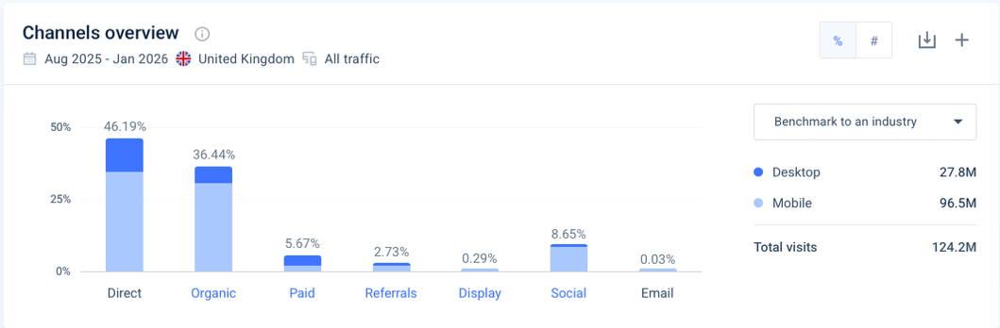
Figure 5: Marketing Channels Overview - ASOS Channel Breakdown
Key insights:
- ASOS leads in direct traffic (46%), showing strongest brand loyalty. Customers type "ASOS" directly rather than searching generically.
- PLT dominates organic search, suggesting superior SEO strategy. They're capturing discovery traffic from users searching for products, not just brand names.
- All three derive 8-10% of traffic from social, with mobile dominance.
The growth drivers data shows organic search grew 31% YoY for the sector, while direct traffic declined 5% a crucial trend for strategic planning.
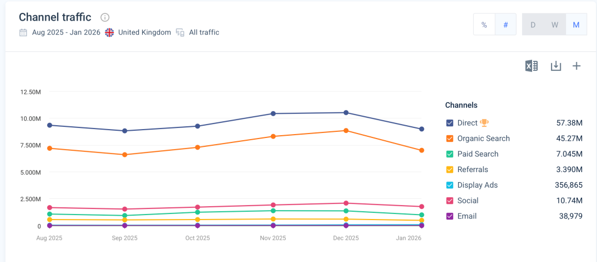
Figure 6: Channel Traffic Trends Over Time
Omaymah Almashaleh et al. (2025) emphasise that sophisticated social media analytics are now essential for effective digital marketing, yet all three brands show relatively low social traffic shares, representing a major opportunity.
Search Strategy: Branded vs. Non-Branded
The search data reveals fundamental strategic differences:
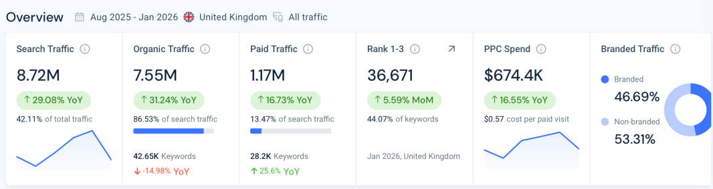
Figure 7: Search Overview - ASOS Branded vs Non-Branded
|
Domain |
Branded Traffic |
Non-Branded |
|
ASOS |
46.69% |
53.31% |
|
Boohoo |
~83% |
~17% |
|
PLT |
~79% |
~21% |
ASOS has a healthy balance nearly half branded (loyal customers), half non-branded (discovery traffic). Boohoo and PLT rely heavily on branded search, meaning most users already know they want those brands.
This explains ASOS's higher paid search investment. They bid aggressively on competitor terms:
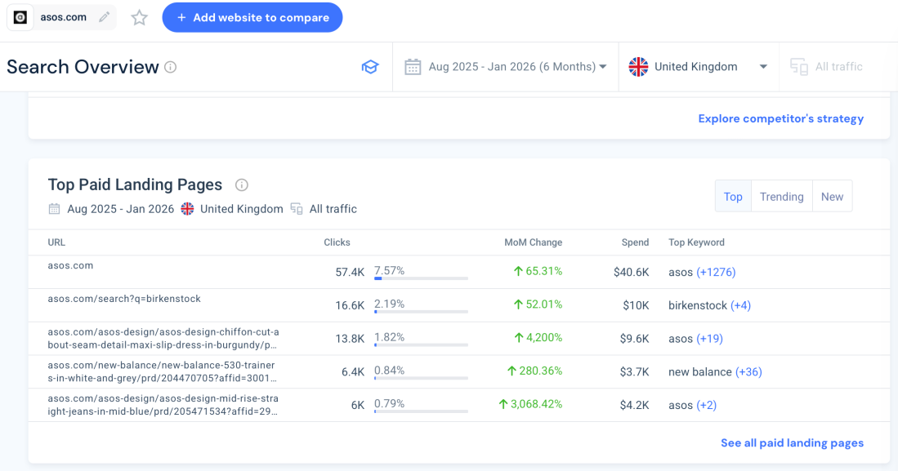
Figure 8: Top Paid Landing Pages - ASOS Bidding on "birkenstock" and "new balance"
ASOS's top paid landing pages target keywords like "birkenstock" ($10K spend) and "new balance" ($3.7K spend) capturing users searching for specific brands and converting them to ASOS shoppers.
PLT's top non-branded keywords include "goin out tops" (14K clicks) and "black dress" (12.7K clicks) generic product searches where purchase intent is high.
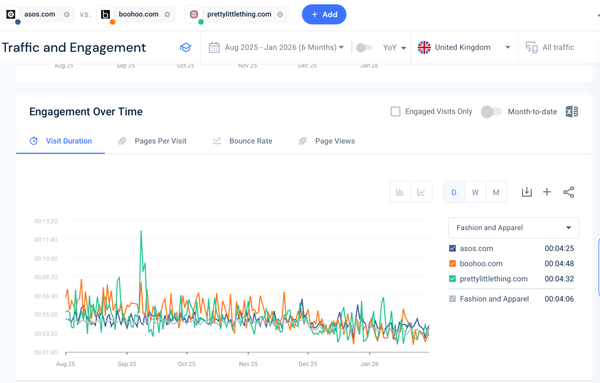
Figure 9: Top Non-Branded Keywords - PLT
Huang, You & Zhou (2022), in their research on ASOS's youth marketing strategy, note that understanding these search behaviours is critical for targeted campaigns and personalisation.
Audience Demographics: Who Shops Where?
All three brands skew female, but PLT has the most extreme gender split:
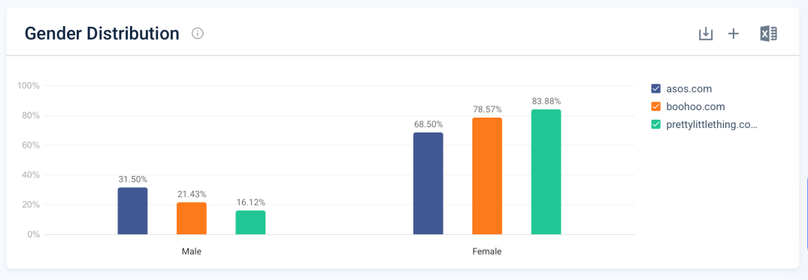
Figure 10: Gender Distribution Comparison
|
Domain |
Male |
Female |
|
ASOS |
31.50% |
68.50% |
|
Boohoo |
21.43% |
78.57% |
|
PLT |
16.12% |
83.88% |
Age distribution shows ASOS attracting a slightly older demographic, with strong representation across 25-44, while PLT dominates the youngest segment.
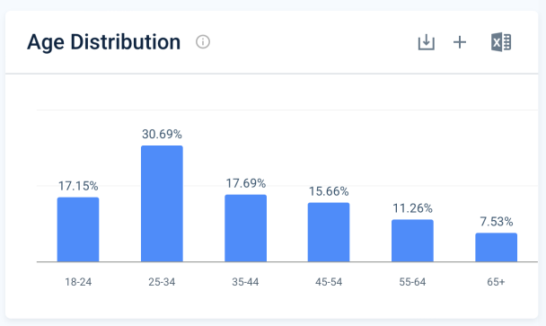
Figure 11: Age Distribution - ASOS
Referral Traffic: Emerging Channels
The referral data shows fascinating new sources:
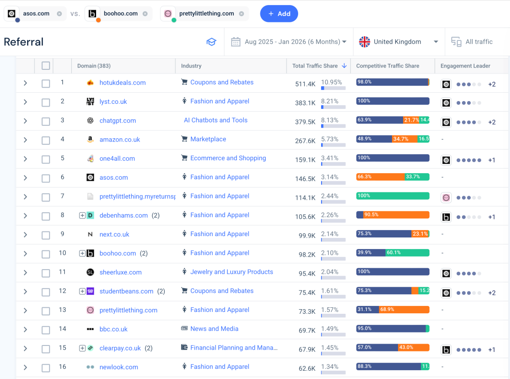
Figure 12: Referral Websites Table
Top referring domains for ASOS include:
- hotukdeals.com (511K visits) - coupon/deal seekers
- lyst.co.uk (383K) - fashion aggregator
- chatgpt.com (379K) - AI recommendations
- amazon.co.uk (267K) - cross-shopping
The ChatGPT referral is particularly interesting users are asking AI for fashion recommendations and being directed to ASOS. This emerging channel will only grow.
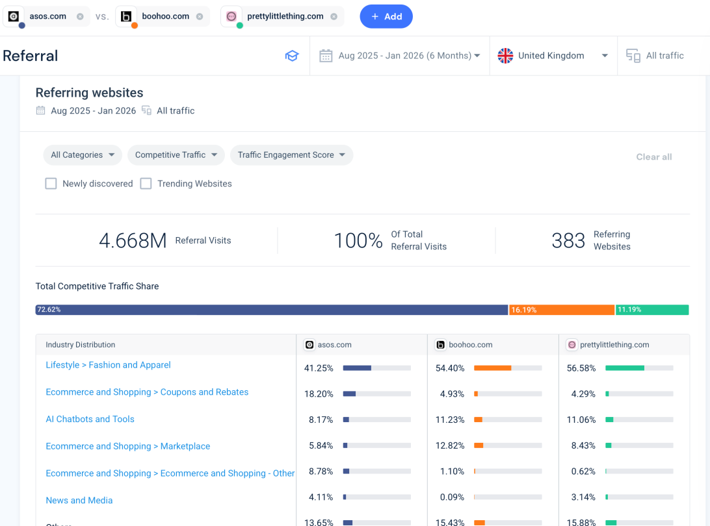
Figure 13: Referral Industry Distribution
Similar Sites: The Competitive Landscape
ASOS's closest competitors by audience affinity:
|
Domain |
Affinity Score |
|
zara.com |
100% |
|
urbanoutfitters.com |
93.79% |
|
next.co.uk |
86.95% |
|
riverisland.com |
79.88% |
|
boohoo.com |
77.62% |
This confirms ASOS competes with both fast fashion (Boohoo) and higher-street brands (Next, M&S), suggesting a broader market position than its pure-play rivals.
Advertiser Insights
ASOS dominates display advertising among the three
|
Advertiser |
Share of Display |
|
ASOS |
83% |
|
Boohoo |
11% |
|
PLT |
6% |
Recent campaigns show ASOS promoting New Balance trainers and ASOS Design products a mix of branded partnerships and own-brand focus.
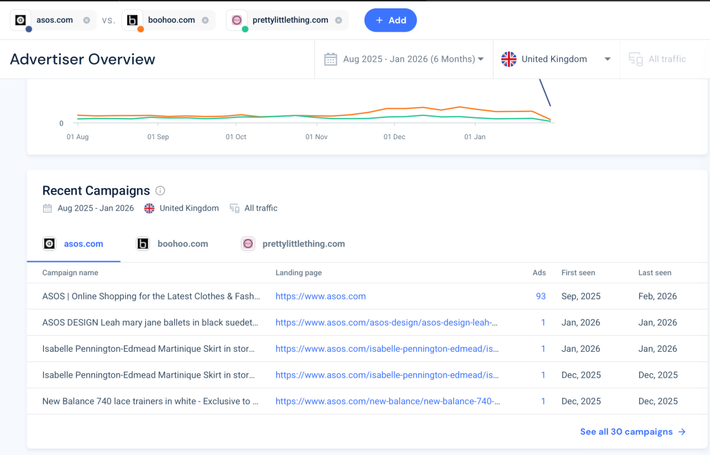
Figure 14: Recent Campaigns - New Balance 740 trainers
Strategic Recommendations
For ASOS:
- Defend the direct traffic advantage (46%) by investing in loyalty programmes. Kosimwidjaja (2025) found that effective loyalty schemes build genuine retention beyond discounts. ASOS's direct share is a fortress build walls around it.
- Improve mobile engagement to match competitors. ASOS's mobile visit duration lags behind PLT yet 77% of traffic is mobile. Maher's (2025) research on e-commerce UX shows that even small mobile improvements significantly impact conversion.
- Protect non-branded search leadership (53%). Continue bidding on competitor terms like "birkenstock" and optimising for generic product keywords where PLT is gaining ground.
- Capitalise on emerging channels like ChatGPT referrals. With 379K visits from chatgpt.com, ASOS should explore partnerships with AI platforms to secure placement in AI-generated recommendations.
For Boohoo & PLT:
- Build brand recognition to increase direct traffic. Both rely too heavily on branded search (80%+). Investment in brand marketing could shift more traffic to the higher-margin direct channel.
- Capitalise on engagement strengths. PLT's 12-minute visit duration spikes suggest they have content or features that resonate identify and scale these.
- Expand non-branded SEO. ASOS's playbook of targeting competitor and generic terms is worth copying. PLT's "goin out tops" success shows this works.
Conclusion
ASOS dominates on traffic volume and brand recognition, with a healthy balance of branded and non-branded search. However, PLT is winning on mobile share and engagement depth. The data suggests ASOS's balanced acquisition strategy (46% direct, 36% organic) is the most sustainable long-term model. But mobile experience improvements and capitalising on emerging channels like AI referrals will determine who leads the next phase of fashion e-commerce.
As Ologunebi & Taiwo (2023) conclude, integrating SEO and SEM strategies while focusing on user experience is essential for e-commerce brands to maintain visibility in an increasingly competitive landscape.
References
- Huang, X., You, A.T. and Zhou, X. (2022). Research on the Online Marketing Strategy of ASOS’s Young Customer Market. BCP Business & Management.
- Kovács, I. and Keresztes, É.R. (2024). Digital innovations in e-commerce: Augmented reality applications in online fashion retail a qualitative study among gen Z consumers. Informatics.
- Maher, F. (2025). Redesigning Old Navy’s B2C E-commerce website for an enhanced user experience in fashion retail.
- Kosimwidjaja, J. (2025). Do Loyalty Programs Actually Build Customer Loyalty? A Service Quality Perspective from Indonesian e-Commerce. The South East Asian Journal of Management.
- Ologunebi, J. and Taiwo, E. (2023). The Importance of SEO and SEM in improving brand visibility in E-commerce industry; A study of Decathlon, Amazon and ASOS. MPRA Paper No. 119205.
- Omaymah Almashaleh et al. (2025). A Framework for Social Media Analytics in Textile Business Circularity for Effective Digital Marketing. Journal of Open Innovation.
- Similarweb (2026). Website Performance. [online] Similarweb website. Available at: https://pro.similarweb.com/#/digitalsuite/websiteanalysis/overview/website-performance/.